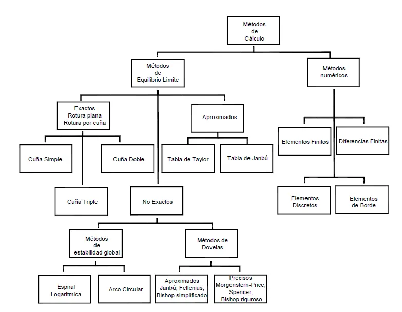
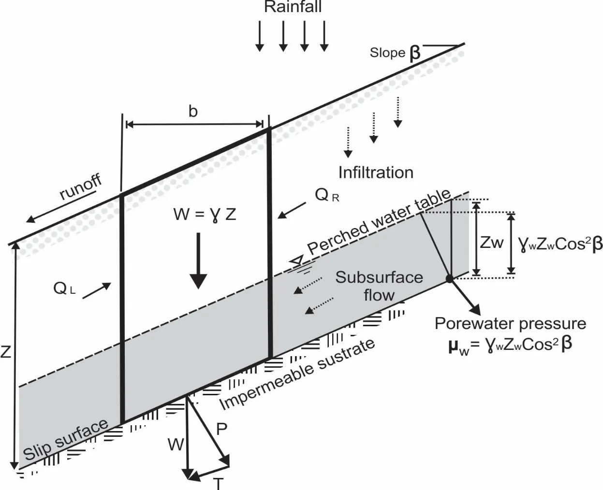
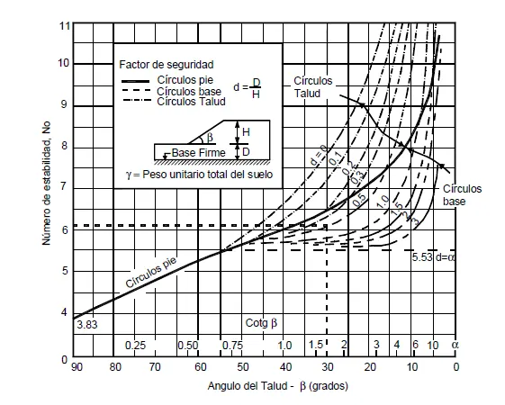
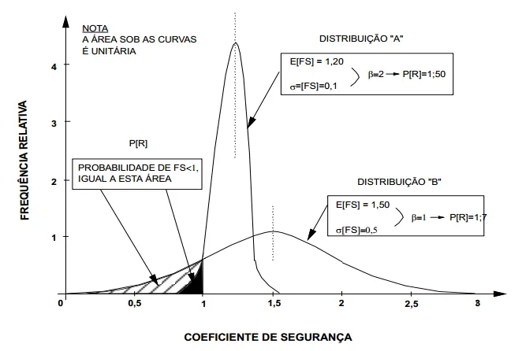

Estabilidad de laderas y taludes#
Importante
Objetivos de aprendizaje
Definir el factor de seguridad e identificar las fuerzas estabilizadoras y desestabilizadoras.
Analizar la estabilidad de un talud infinito con y sin flujo.
Aplicar el método de Culmann a taludes finitos con superficie plana.
Aplicar los métodos de dovelas (ordinario, Bishop simplificado, Janbu) a superficies curvas.
Evaluar la estabilidad en condición sísmica con el método pseudoestático.
Usar ábacos de estabilidad y realizar el análisis cinemático de taludes en roca.
Calcular la probabilidad de falla con los métodos FOSM y de Rosenblueth.
Métodos de análisis#
Los métodos para evaluar la estabilidad de taludes se dividen en dos grandes grupos. Los métodos de equilibrio límite suponen una superficie de falla y comparan las fuerzas o momentos que tienden a producir el movimiento con la resistencia disponible a lo largo de esa superficie. Pueden ser exactos para geometrías simples (talud infinito, superficie plana, cuñas) o aproximados para superficies curvas divididas en dovelas. Los métodos de esfuerzo-deformación, como los elementos finitos o las diferencias finitas, calculan los esfuerzos y deformaciones en todo el terreno y no necesitan suponer la superficie de falla, pero requieren parámetros de deformabilidad. Este capítulo trata los métodos de equilibrio límite, que siguen siendo los más usados en la práctica.


Figura 61 Clasificación de los métodos de análisis de estabilidad de taludes.#
Factor de seguridad#
Desde el punto de vista mecánico, un movimiento en masa ocurre cuando los esfuerzos cortantes producidos por las fuerzas motrices, principalmente la gravedad, superan la resistencia del material a lo largo de una superficie. Las fuerzas desestabilizadoras incluyen el peso de la masa, las sobrecargas, las presiones de agua en grietas y las fuerzas sísmicas; las estabilizadoras, la resistencia al corte del material y las fuerzas de obras de contención o anclajes.
El factor de seguridad se define como la relación entre la resistencia al corte disponible y el esfuerzo cortante necesario para el equilibrio, o de manera equivalente entre los momentos resistentes y los actuantes:
donde \(c'_d=c'/FS\) y \(\tan\phi'_d=\tan\phi'/FS\) son los parámetros movilizados. Si \(FS>1\) el talud es estable; si \(FS=1\) está en equilibrio límite. Como los parámetros y el modelo tienen incertidumbre, se exigen valores mínimos entre 1,3 y 1,5 en condiciones estáticas, según la importancia de la obra y la calidad de la información (NSR-10, capítulo H.5). Desde el punto de vista geológico, conviene recordar que una ladera natural que ha permanecido estable durante siglos tiene un factor de seguridad mayor que 1, aunque los parámetros de laboratorio sugieran lo contrario. Este hecho se usa en el análisis retrospectivo para calibrar los parámetros con deslizamientos ocurridos, con \(FS=1\) en el momento de la falla.
Talud infinito#
Cuando la superficie de falla es paralela a la superficie del terreno y su profundidad es pequeña respecto a su longitud, se puede suponer que el talud es infinito y despreciar los efectos de borde. Es el modelo de los deslizamientos traslacionales superficiales, por ejemplo de un suelo residual o un coluvión sobre roca, y de la mayoría de los deslizamientos detonados por lluvia en los Andes.
Sin flujo#
Para una columna de suelo de espesor vertical \(H\) sobre un plano inclinado \(\beta\), el esfuerzo normal y el cortante sobre la base son \(\sigma=\gamma H\cos^2\beta\) y \(\tau=\gamma H\cos\beta\sin\beta\). El factor de seguridad es:
Si \(c'=0\), el factor de seguridad no depende del espesor: \(FS=\tan\phi'/\tan\beta\), y el talud es estable mientras su pendiente sea menor que el ángulo de fricción. Con cohesión existe una profundidad crítica por encima de la cual el talud falla.
Con flujo paralelo al talud#
Si hay flujo paralelo a la superficie con el nivel freático a una altura \(m\,H\) sobre la superficie de falla, la presión de poros en la base es \(u=m\,H\,\gamma_w\cos^2\beta\) y el factor de seguridad queda:
En la condición más crítica, con el nivel freático en la superficie (\(m=1\)) y \(c'=0\), el factor de seguridad se reduce aproximadamente a la mitad: \(FS=(\gamma'/\gamma_{sat})(\tan\phi'/\tan\beta)\).


Figura 62 Talud infinito con infiltración y flujo paralelo a la ladera.#
Ejemplo resuelto: talud infinito
Un suelo residual de 2,4 m de espesor descansa sobre roca en una ladera de 25°. Sus parámetros son \(c'=9{,}6\) kPa, \(\phi'=15°\) y \(\gamma=15{,}7\) kN/m³. Calcule el factor de seguridad sobre el contacto suelo-roca: (a) sin flujo y (b) para un espesor de 1,2 m con el nivel freático en la superficie y \(\gamma_{sat}=18{,}5\) kN/m³.
(a) \(FS=\dfrac{9{,}6}{15{,}7(2{,}4)\cos^225°\tan25°}+\dfrac{\tan15°}{\tan25°}=0{,}665+0{,}575=1{,}24\).
(b) Con \(m=1\): \(FS=\dfrac{c'}{\gamma_{sat}H\cos^2\beta\tan\beta}+\dfrac{\gamma'}{\gamma_{sat}}\dfrac{\tan\phi'}{\tan\beta}=\dfrac{9{,}6}{18{,}5(1{,}2)(0{,}821)(0{,}466)}+\dfrac{8{,}69}{18{,}5}(0{,}575)=1{,}13+0{,}27=1{,}40\).
Aunque el caso (b) está saturado, su factor de seguridad es mayor porque el espesor es la mitad y la cohesión pesa más. Si el suelo de 2,4 m se saturara, el factor de seguridad caería por debajo de 1. Esto muestra la importancia del espesor del suelo, que es un dato geológico, en la estabilidad de las laderas.
Talud finito con superficie de falla plana: método de Culmann#
Culmann supuso que la falla de un talud de altura \(H\) e inclinación \(\beta\) ocurre a lo largo de un plano que pasa por el pie, con inclinación \(\theta\). El peso de la cuña es:
y el factor de seguridad sobre el plano de longitud \(L=H/\sin\theta\) es:
El plano crítico, el de menor factor de seguridad, se encuentra con \(\theta_{cr}=(\beta+\phi')/2\), y la altura crítica del talud es:
El método da buenos resultados en taludes casi verticales. En la práctica es más útil para taludes en roca con una discontinuidad que define el plano de falla.
Ejemplo resuelto: método de Culmann
Un corte de 8 m de altura y 60° de inclinación en un suelo con \(c'=15\) kPa, \(\phi'=25°\) y \(\gamma=17\) kN/m³. Evalúe un plano de falla a 40° y la altura crítica.
\(W=\tfrac12(17)(64)\dfrac{\sin20°}{\sin60°\sin40°}=334\) kN/m; \(L=8/\sin40°=12{,}4\) m.
\(FS=\dfrac{15(12{,}4)+334\cos40°\tan25°}{334\sin40°}=\dfrac{186+119}{215}=1{,}42\).
\(H_{cr}=\dfrac{4(15)}{17}\cdot\dfrac{\sin60°\cos25°}{1-\cos35°}=15{,}3\) m. El corte de 8 m tiene un margen razonable, siempre que no haya discontinuidades desfavorables ni presión de agua.
Superficies circulares: método de las dovelas#
En suelos relativamente homogéneos las superficies de falla son curvas y se aproximan a arcos de círculo. Para el caso no drenado (\(\phi=0\)) el factor de seguridad se obtiene directamente por equilibrio de momentos con el método del arco circular: \(FS=c_u\,L_{arco}\,R/(W\,x)\). Para el caso general, la masa se divide en dovelas verticales y se plantea el equilibrio de cada una.

Figura 63 División de la masa deslizante en dovelas y fuerzas sobre una dovela.#
El problema es estáticamente indeterminado: para \(n\) dovelas hay \(4n-2\) incógnitas (fuerzas normales en la base, fuerzas entre dovelas, sus puntos de aplicación y el factor de seguridad) y solo \(3n\) ecuaciones. Los métodos se diferencian en las \(n-2\) hipótesis adicionales sobre las fuerzas entre dovelas.
Método ordinario o de Fellenius#
Ignora todas las fuerzas entre dovelas y plantea el equilibrio de momentos de toda la masa respecto al centro del círculo:
donde \(\alpha_i\) es la inclinación de la base de la dovela, \(l_i=b_i/\cos\alpha_i\) su longitud y \(u_i\) la presión de poros en la base. Es sencillo y conservador; con presiones de poros altas puede subestimar el factor de seguridad entre 10 y 20 %.
Método simplificado de Bishop#
Bishop [1955] consideró las fuerzas horizontales entre dovelas, pero despreció las verticales. Satisface el equilibrio de fuerzas verticales en cada dovela y el de momentos de toda la masa:
Como el factor de seguridad aparece a ambos lados, se resuelve por iteración, partiendo del valor del método ordinario. Es el método más usado para superficies circulares y da resultados muy cercanos a los métodos rigurosos.
Ejemplo resuelto: método ordinario y Bishop simplificado
Un talud en un suelo residual con \(c'=10\) kPa y \(\phi'=30°\) se analiza con una superficie circular dividida en seis dovelas. Los datos y resultados por dovela son:
Dovela |
\(b\) (m) |
\(W\) (kN/m) |
\(\alpha\) (°) |
\(u\) (kPa) |
\(W\sin\alpha\) |
Numerador ordinario |
\(m_\alpha\) (\(FS=1{,}29\)) |
Numerador Bishop |
|---|---|---|---|---|---|---|---|---|
1 |
4 |
90 |
−10 |
0 |
−15,6 |
91,8 |
0,907 |
101,4 |
2 |
4 |
260 |
5 |
10 |
22,7 |
166,5 |
1,035 |
161,3 |
3 |
4 |
380 |
20 |
25 |
130,0 |
187,3 |
1,093 |
184,5 |
4 |
4 |
420 |
36 |
30 |
246,9 |
160,0 |
1,072 |
198,9 |
5 |
4 |
330 |
53 |
15 |
263,5 |
123,6 |
0,959 |
204,2 |
6 |
3 |
120 |
70 |
0 |
112,8 |
111,4 |
0,763 |
130,2 |
Σ |
760,2 |
840,6 |
980,5 |
Método ordinario: \(FS=840{,}6/760{,}2=1{,}11\).
Bishop simplificado: partiendo de \(FS=1{,}11\), las iteraciones dan 1,24, 1,28, 1,29 y convergen en \(FS=1{,}29\).
El método ordinario subestima el factor de seguridad en un 14 % respecto a Bishop. El análisis debe repetirse para otras superficies hasta encontrar el factor de seguridad mínimo, labor que hacen los programas de cómputo con búsquedas automáticas de círculos.
Janbu y los métodos rigurosos#
El método simplificado de Janbu es aplicable a superficies no circulares. Supone nulas las fuerzas de corte entre dovelas, satisface el equilibrio de fuerzas verticales y horizontales, y aplica un factor de corrección \(f_0\) para tener en cuenta las fuerzas entre dovelas omitidas. Los métodos rigurosos satisfacen todas las condiciones de equilibrio. El de Spencer supone que las fuerzas entre dovelas tienen una inclinación constante y busca el valor de esa inclinación que hace iguales los factores de seguridad por fuerzas y por momentos. El de Morgenstern y Price supone que la inclinación varía según una función de la posición multiplicada por un factor de escala: cuando la función es nula coincide con Bishop, y cuando es constante, con Spencer. Para la mayoría de los problemas, los métodos que satisfacen el equilibrio de momentos (Bishop, Spencer, Morgenstern-Price) dan resultados que difieren menos del 5 %.

Figura 64 Comparación de las hipótesis de los métodos de dovelas.#
Análisis sísmico pseudoestático#
En Colombia los sismos son, junto con la lluvia, el principal detonante de movimientos en masa, y la NSR-10 (capítulo H.5) exige evaluar la estabilidad de los taludes bajo condiciones sísmicas. El método más usado es el pseudoestático, que representa la acción del sismo con una fuerza horizontal constante aplicada en el centro de gravedad de la masa deslizante:
donde \(k_h\) es el coeficiente sísmico horizontal. Como la aceleración del sismo actúa durante un tiempo muy corto y no simultáneamente en toda la masa, \(k_h\) se toma como una fracción, comúnmente entre 0,5 y 0,8, de la aceleración máxima del terreno definida para el sitio según el estudio de amenaza sísmica o la NSR-10. El efecto de una componente vertical suele despreciarse.
La fuerza sísmica aumenta el esfuerzo cortante actuante y, como empuja la masa hacia afuera, reduce el esfuerzo normal sobre la superficie de falla. Para el talud infinito, por unidad de área de la base:
En los métodos de dovelas, se suma a cada dovela la fuerza \(k_hW_i\) y su momento respecto al centro del círculo. En el método ordinario, por ejemplo:
donde \(y_i\) es la distancia vertical entre el centro de gravedad de la dovela y el centro del círculo. Se exige típicamente un factor de seguridad pseudoestático mínimo cercano a 1,05 a 1,1. Cuando el factor de seguridad resulta menor que 1, el método de Newmark (1965) permite estimar el desplazamiento permanente que sufriría la masa durante el sismo, integrando las aceleraciones que superan la aceleración de fluencia \(k_y\), es decir, la que produce \(FS=1\).
Ejemplo resuelto: escenarios con agua y sismo
Para el talud infinito del primer ejemplo (2,4 m de suelo seco sobre roca, \(\beta=25°\), \(c'=9{,}6\) kPa, \(\phi'=15°\), \(\gamma=15{,}7\) kN/m³), calcule el factor de seguridad con coeficientes sísmicos \(k_h\) de 0,10, 0,15 y 0,20.
\(k_h\) |
\(\sigma\) (kPa) |
\(\tau\) (kPa) |
\(FS\) |
|---|---|---|---|
0 |
30,95 |
14,43 |
1,24 |
0,10 |
29,51 |
17,53 |
1,00 |
0,15 |
28,79 |
19,07 |
0,91 |
0,20 |
28,06 |
20,62 |
0,83 |
La aceleración de fluencia es \(k_y\approx0{,}10\): cualquier sismo que produzca un coeficiente mayor desplaza la masa. Si además el suelo estuviera saturado, el factor de seguridad estático ya sería menor que 1. Este tipo de matriz de escenarios (seco, con diferentes niveles freáticos, con sismo y combinados) es la base del segundo trabajo del curso.
Ábacos de estabilidad#
Para análisis preliminares de taludes homogéneos se usan ábacos que dan el factor de seguridad en función de números adimensionales. El ábaco de Taylor (1937) da el número de estabilidad \(N_s=c_d/(\gamma H)\) en función de la inclinación del talud y del ángulo de fricción, y permite distinguir entre la falla de talud, que pasa por el pie, y la falla de base, que pasa por debajo del pie cuando hay un estrato firme profundo. Los ábacos de Hoek y Bray consideran cinco condiciones de agua subterránea, desde el talud seco hasta el saturado con recarga intensa, y dan el factor de seguridad para superficies circulares a partir de \(c'/(\gamma H\tan\phi')\) y \(\tan\phi'/FS\). Chica [1989] publicó ábacos para deslizamientos planares y circulares que se usaron ampliamente en Colombia.


Figura 65 Ábaco de estabilidad de Taylor.#
Taludes en roca: análisis cinemático#
En los macizos rocosos con discontinuidades bien definidas, la estabilidad está controlada por la orientación de estas respecto al talud. El análisis cinemático determina, con la proyección estereográfica, qué mecanismos de falla son geométricamente posibles antes de calcular el factor de seguridad [Hoek and Bray, 1981].
Falla planar. Ocurre cuando una discontinuidad tiene un rumbo aproximadamente paralelo al del talud (dentro de ±20°), buza hacia la cara con un ángulo menor que el del talud, de modo que aflora en ella, y con un ángulo mayor que su ángulo de fricción. Además deben existir superficies laterales que liberen el bloque.
Falla en cuña. Se forma con dos discontinuidades que se intersecan. Es posible cuando la línea de intersección buza hacia la cara del talud, aflora en ella y tiene un buzamiento mayor que el ángulo de fricción.
Volcamiento. Ocurre en macizos con discontinuidades de buzamiento fuerte hacia el interior del talud y rumbo aproximadamente paralelo a él, que forman columnas esbeltas que rotan hacia afuera.

Figura 66 Análisis cinemático de taludes en roca con proyección estereográfica.#
Una vez identificado un mecanismo posible, el factor de seguridad se calcula con el equilibrio del bloque. Para la falla planar, incluyendo la presión de agua en una grieta de tracción (\(V\)) y en el plano de falla (\(U\)):
donde \(\psi_p\) es el buzamiento del plano y \(A\) su área. Este análisis es donde el trabajo del geólogo resulta más directo: la calidad del levantamiento estructural determina la calidad del análisis.
Análisis probabilístico del factor de seguridad#
El enfoque determinístico usa valores constantes de los parámetros y obtiene un único factor de seguridad. El análisis paramétrico varía los parámetros uno a uno para ver su efecto, pero sin considerar su probabilidad. El enfoque probabilístico trata los parámetros como variables aleatorias con distribuciones de probabilidad, de modo que el resultado es una distribución del factor de seguridad, a partir de la cual se calculan la probabilidad de falla, \(P_f=P(FS<1)\), y el índice de confiabilidad:
Si el factor de seguridad tiene distribución normal, \(P_f=1-\Phi(\beta)\). Un talud con \(FS=1{,}5\) y gran incertidumbre puede tener una probabilidad de falla mayor que otro con \(FS=1{,}3\) y parámetros bien conocidos [Baecher and Christian, 2003].


Figura 67 Distribución del factor de seguridad, índice de confiabilidad y probabilidad de falla.#
Método FOSM#
El método de primer orden y segundo momento (FOSM) trunca la serie de Taylor del factor de seguridad en la primera derivada y trabaja solo con medias y varianzas:
Las derivadas se aproximan numéricamente incrementando cada variable alrededor de un 10 % de su media, mientras las demás se mantienen en sus valores medios, lo que requiere \(n+1\) cálculos. El método es sencillo, permite cuantificar la contribución de cada variable a la varianza y no requiere suponer las distribuciones de las variables, pero no da la distribución completa del factor de seguridad.
Método de las estimativas puntuales de Rosenblueth#
Rosenblueth [1975] representa la distribución de cada variable con dos puntos, \(\bar x_i\pm\sigma_i\), y calcula el factor de seguridad en las \(2^n\) combinaciones. Con variables no correlacionadas y pesos iguales:
Es versátil y fácil de aplicar, pero requiere más cálculos que el FOSM y suponer una distribución para el factor de seguridad.
Ejemplo resuelto: FOSM y Rosenblueth en un talud infinito
Un talud infinito de 18° con una capa de suelo de 0,5 m tiene parámetros aleatorios: \(c'\) con media 10 kPa y coeficiente de variación de 40 %; \(\tan\phi'\) con media \(\tan20°=0{,}364\) y CV de 10 %; y \(\gamma\) con media 26,5 kN/m³ y CV de 3 %.
FOSM. Con los valores medios, \(FS=3{,}69\). Incrementando cada variable por separado: \(\Delta c'=+1\) kPa da \(\Delta FS=+0{,}257\); \(\Delta\tan\phi'=+0{,}036\) da \(+0{,}112\); \(\Delta\gamma=+2{,}65\) kN/m³ da \(-0{,}234\). La varianza es:
\(V[FS]=(0{,}257)^2(16)+(0{,}112/0{,}036)^2(0{,}0013)+(0{,}234/2{,}65)^2(0{,}632)=1{,}055+0{,}012+0{,}005=1{,}072\)
\(\sigma[FS]=1{,}04\), \(\beta=(3{,}69-1)/1{,}04=2{,}6\) y \(P_f\approx0{,}5\,\%\).
Rosenblueth. Las ocho combinaciones de \(\bar x\pm\sigma\) dan factores de seguridad entre 2,50 y 4,94, con \(E[FS]=3{,}69\) y \(\sigma[FS]=1{,}04\), prácticamente iguales a los del FOSM.
La cohesión aporta el 98 % de la varianza. El análisis indica dónde invertir el esfuerzo de caracterización: más ensayos para reducir la incertidumbre de \(c'\) mejoran la confiabilidad mucho más que cualquier otro dato.
Lecturas recomendadas#
Ejercicios#
Determine la pendiente máxima admisible, con \(FS=1{,}5\), para un suelo residual arenoso con \(c'=0\) y \(\phi'=34°\), (a) seco y (b) saturado con flujo paralelo a la ladera.
Repita el ejemplo de Bishop suponiendo que la presión de poros se duplica en todas las dovelas.
Un talud de 70° con rumbo N30°E buza hacia el SE. El macizo tiene tres familias de diaclasas: 140/40, 210/65 y 320/75 (dirección de buzamiento/buzamiento). Con \(\phi=30°\), identifique en la red estereográfica los mecanismos posibles.